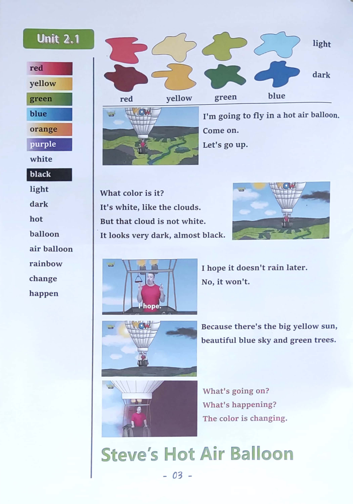

Day 3
Unit 2 · story
教材重点
教材重点依据网盘文件“第四级绿色每日打卡全.pdf”，PDF 第 5 页对应 Day 3；以原图为准，避免对图片文字做不可靠的自动识别。
网盘教材重点原图 · PDF 第 5 页对应 Day 3

Unit 2 · story · 6–7岁
green · blue · red · yellow
Hello, hello, my name's Steve.
台词本为机器转写，可能存在识别误差；不等同于视频逐字原声。
详细内容
Part 1 核心词汇
必须掌握 · 4 个Part 2 跟读句型与句型拓展
左侧保留台词本原句，右侧为替换练习；拓展内容不是视频逐字台词。
Hello, hello, my name's Steve.
It's time to play. It's time to play in English.
Light and dark, red.
Light and dark, yellow, light and dark, green and light and dark blue.
Hello, boys and girls, I'm going to fly in a hot air balloon.
Part 3 台词本全文
来源：第4级台词本 · 003.Wow!Green - Unit 2 story.pdf。以下保留网盘 PDF 的机器转写文本，仅清理了文件路径页眉和空行。
Hello, hello, my name's Steve.
It's time to play. It's time to play in English.
Light and dark, red.
Light and dark, yellow, light and dark, green and light and dark blue.
Hello, boys and girls, I'm going to fly in a hot air balloon.
Why don't you come with me Come on, so let's go up up and away.
Ah,
HA, HA,
Hello, hey, do you like my hot air balloon What color is it.
Yeah, it's white, it's white, it's white, like the clouds, but hey.
That cloud's not white, no, it looks very dark, almost black. How I hope it doesn't rain later.
Oh no, it won't, because look, there's the big yellow sun, beautiful, blue sky and green trees below.
Oh, it's a shame Maggie isn't here to enjoy all of this. I wonder where she is.
Hey, what's going on What's happening the colors changing, hey, what color is this.
Yeah, it's red, that's easy, but this is a kind of dark, red, isn't it?
Say it with me, what color is it It's dark red, it's dark red, it's dark red, that's right.
Oh, but it's changing now, hey, it's not dark red any more, no,
It's A-A light red, yeah, oh, now everything's orange. What's going on.
Hey, what color is this? Yeah, it's yellow, kind of dark, yellow, but who.
It's getting lighter.
And lighter, hey, what color is this? Yeah, say it with me, it's light yellow, it's light yellow.
It's light yellow, that's right. This is crazy.
Oh, the color's changing again, hey, what color is this.
Yeah, it's green, that's right, light, green, it's getting darker.
And darker, oh, look, what color's this.
Yeah, it's dark green, say it with me, come on, it's dark green.
It's dark, green, and again, it's dark green. What is happening.
I think this must be Maggie Magic.
Oh, hey, what color is this? Yeah, blue. It's a light blue.
Say that with me, come on, what color is it?
/
-
/4/003.Wow!Green - Unit 2 story.txt[2022/3/29
星期二
6:49:26]
It's light blue, it's light blue, it's light blue, it's light blue. Well done.
Oh, the colors changing again, it's getting darker, hey, what color is this? Yeah, it's dark, blue.
Very dark, oh almost purple. Wow.
Hey,
That was fun, wasn't it?
Hey, I think that must have been Maggie Magic. Where is that naughty, naughty bird?
Maggie.
Monkey, steve coming.
Oh, hey, maggie, was that you using your Maggie magic to change the colors Now Steve, no,
It's a rainbow, a rainbow.
Wow.
A rainbow. Hey,
Can you name all the colors of a rainbow Oh wow, it's beautiful, but hey Maggie,
If this is a rainbow, there must be a pot of gold somewhere down the hill.
Sorry, maggie, but hey, look there it is.
We have to get down there quickly, OK, I've got a good idea.
Oh no, not one of Maggie's good ideas. Oh hey, maggie, no song.
Hi.
Oh, oh, oh,
Oh hey, maggie.
That was very, very naughty. Sorry was really scared.
Oh, but Steve get the gold, the gold gold, oh, yeah, the gold.
Oh no, too slow.
Sorry, maggie, hey,
It was still good fun flying through the rainbow, wasn't it See the next time, boys and girls, bye, bye.
Yes, see, you.